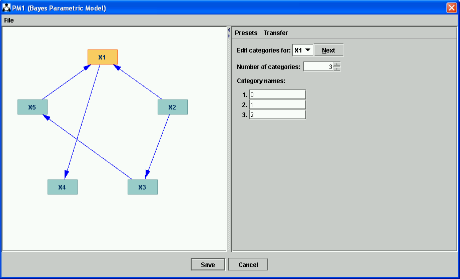
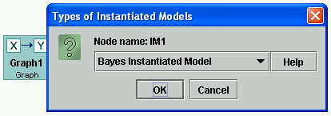
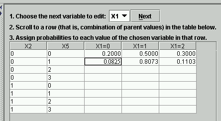

Bayes Instantiated Model |
A Bayes Instantiated Model (Bayes IM) extends a Bayes Parameterized Model, specifying values for all of the parameters in the Bayes net. The parameters for a Bayes net (in the form that they're used in Tetrad) are conditional probabilities stored in conditional probability tables, one for each variable in the Bayes net. A variable X has a (possibly empty) list of parents P1, ..., Pn--i.e., variables Pi such that Pi-->X in the Bayes PM. The variable itself and each of its parents has a list of categories. A conditional probability table for X is a specification of the probability P(X=x' | P1=p1', ..., Pn=pn') for each category x' of X and each combination of categories <p1', ..., pn'> for parents P1, ..., Pn of X. For any particular combination of parent values <p1', ..., pn'>, the sum of the conditional probabilities P(X=xj | P1=p1',...,Pn=pn') for all categories xj of X is equal to 1.0.
To construct a Bayes IM, first construct a DAG, then a Bayes PM, and add an IM box to the workspace, with an arrow from the Bayes PM to the IM.
Fill in the Graph box and the PM box, as explained in Bayes Parameterized Model. For instance, you might end up with a graph that looks like this (the categories for X1 are shown).

Now, double click the IM box. You get a choice of models; choose Bayes Instantiated Model:

What you click OK, you are offered a choice. You may either initialize the parameters of your Bayes net manually (i.e., fill them in one by one, by hand), or fill them in randomly.

We choose "Manually." We now get a dialog that looks like the following:

X1 here has two parents, X2 and X5. Each combination of parent values for X2 and X5 is listed as a row in the conditional probability table for X1. Each category for X1 is listed as a column in the conditional probability table. We can now fill in these probability values however we like, provided we choose non-negative real numbers that sum to 1.0 in each row. The interface helps out a little by filling in table cells whose values are implied. If you fill in the 0.2000 and 0.5000 in the table below, the table will fill in the 0.3000 for you. Also, if you simply want to fill in table cells randomly, right click on any nonselected table cell. You get a popup menu like the one below.

If you select "Randomize this row," the row is filled in with random values. For example:

Similarly for the other popup menu functions shown.
Once all of the table cells have been filled in, the Bayes IM is ready to be used as input to other boxes. You may, for example, simulate data using the Bayes IM, or you may perform updating operations on it. See Simulating Data (Bayes) for more information on how to simulate data and Update Box for more information on updating.
A Bayes IM can be constructed as indicated above (as a child of a Bayes PM). Bayes IM's are also, however, output by other processes. In particular, a Bayes IM can be made a child of the following:
Old text:
If you choose an ML Instantiated Bayes Model, the program will either randomly specify the conditional probability
of each value of each variable given the values of its parents, or you can specify them manually through the dialog
box:

Choose a variable either using the "Next" button on the right side of the window or by clicking on the variable in
the graph on the left
side of the window. In either case, you will see one or more rows of entry spaces, with each entry space labeled by
the name of the value of the selected variables. Each row corresponds to an allowed assignment of variables to the
variables that are parents of the selected variable. For each row--each assignment of allowed values to the
variables that are parents of the variable you have selected--you must enter a numerical value between 0 and 1 for
each value of the variable you have selected. These are the respective probabilities of the values of your selected
variable, condiitonal on the values in that row of its parents variables. The numbers you put into any
row must add up exactly to 1. If they don't the program will simply erase the values you have entered in that row.
If you start entering numbers in a row from the left, which is highly recommended, the program will automatically
fill in the next to last entry space with the number (if one exists) needed to make the row numbers sum to 1.
Entering all of these conditional probabilities in even a medium sized model is very tedious, but there is no help
for it other than to estimate the condiitonal probabilities from a data set, or to randomize. If you
choose "Random" instead of "Manual" you will get a window very much like the one above, except that randomly chosen
values will be entered in each row. You can edit these values by clicking on a row and typing. As in other windows
showing graphs, you can select a variable by clicking on it.
The Bayes IM can accept the following potential parents.